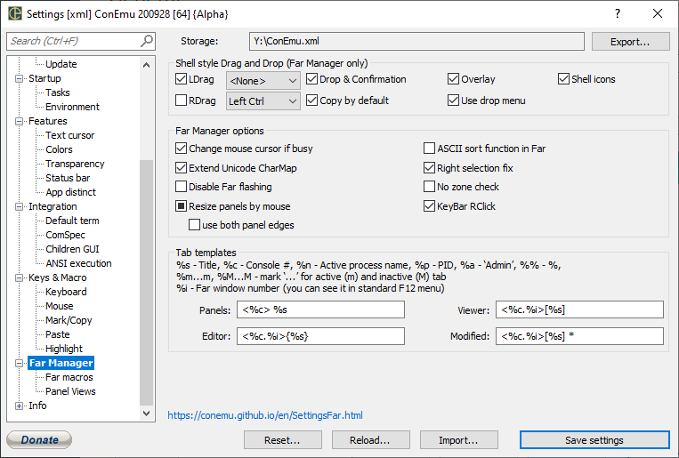

LDrag Allow drag with left mouse button
Drop & Confirmation Off - ConEmu will NOT receive external drops On - Drops allowed (Far confirmation dialog) 3rd-state - same as "On", but w/o confirmation
Overlay Create and display overlay transparent snapshoot of files are dragged
Shell icons Show icons of dragged iterms
RDrag Allow drag with right mouse button
Drag with left mouse button, only when pressed...
Copy by default Forced "Copy" action as default, You can use Ctrl, Shift or Alt during drag to change action
Use drop menu
Drag with right mouse button, only when pressed...
Hourglass if not responding Show AppStarting cursor (arrow with a small hourglass) when Far is not responding (during long operations)
Resize panels by mouse Enable sizing of left and right panel by dragging with mouse. 3rd-state - resize on button release with macroses.
Right selection fix Fix dashed selection with fast right mouse drag Far 3: restore files selection instead of EMenu
Extend Unicode CharMap Show glyphs from selected font in ‘Unicode CharMap’ plugin (FAR2 only)
use both panel edges
No zone check SEE_MASK_NOZONECHECKS. Same as appeared in Far 2 build 771 and disappeared after 1464.
Disable Far flashing Disable flashing (from Far Manager) on Windows taskbar. 3rd-state - allow short flashing.
ASCII sort function in Far Hook Far string sort functions. !!!HIGHLY EXPERIMENTAL!!!
KeyBar RClick
LTEXT
Panels Tab template for Far Manager panels
Viewer Tab template for Far Manager internal viewers
Editor Tab template for Far Manager internal editors
Modified Tab template for Far Manager internal modified editors